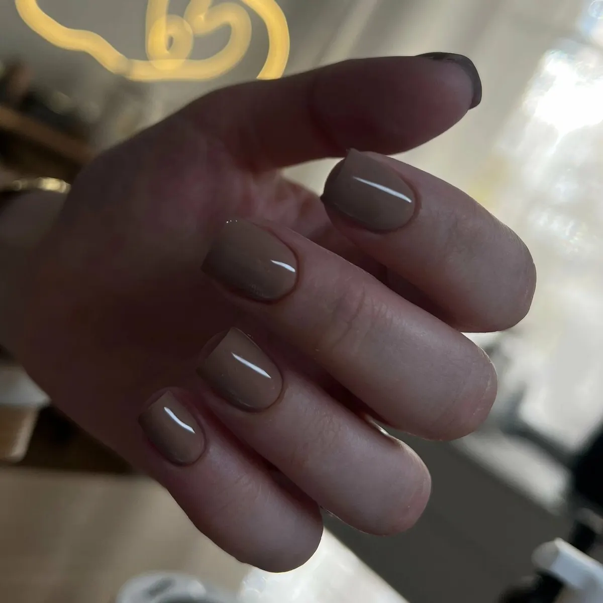
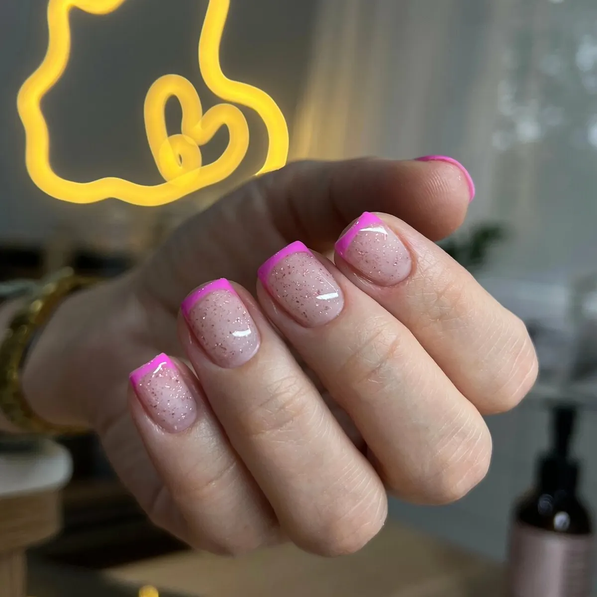
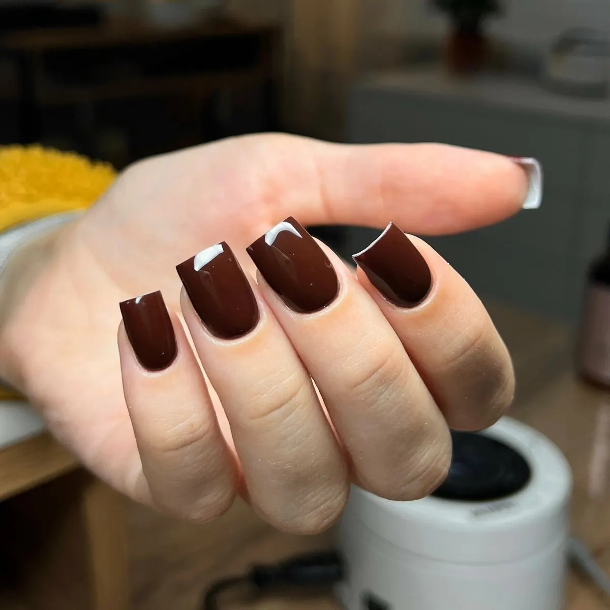
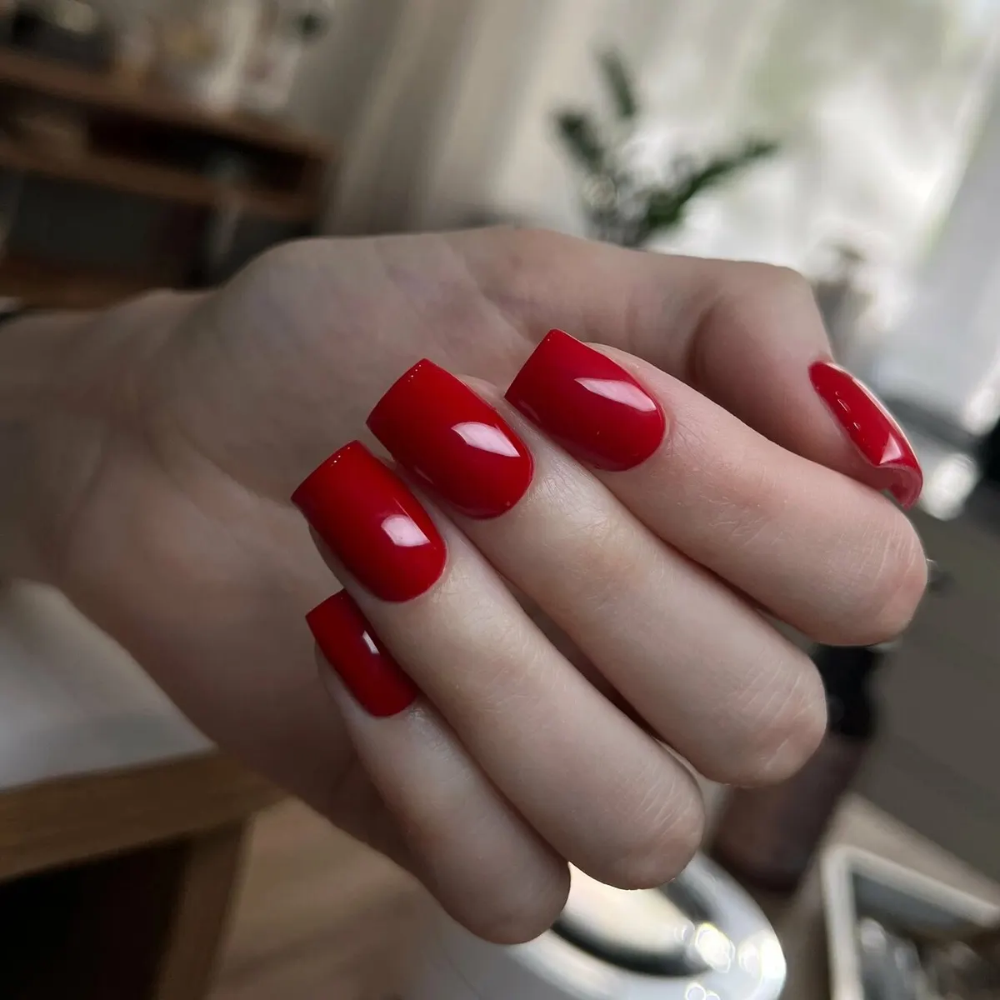
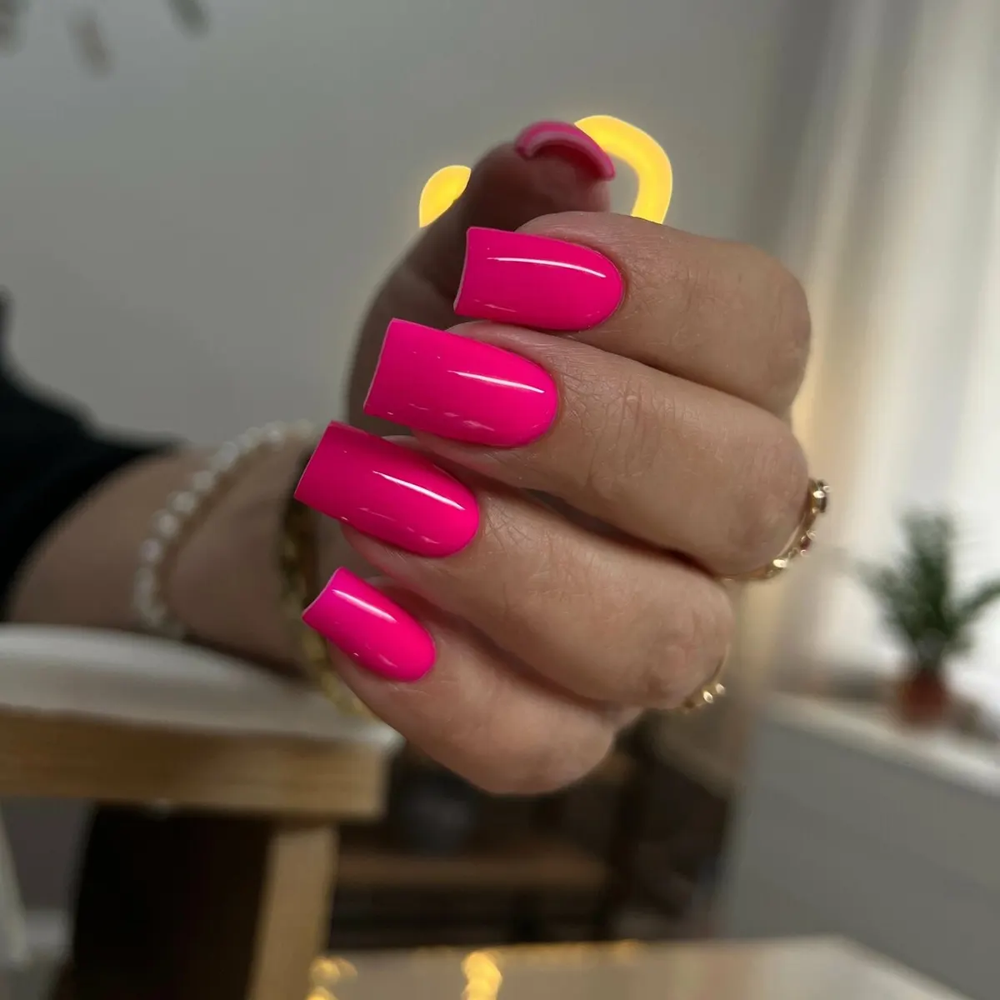

Маникюрный кабинет · центр Мурманска
Свой мастер маникюра в центре Мурманска
Кабинет на проспекте Ленина, 63: маникюр держится до трёх недель без сколов, инструменты проходят жарочный шкаф, к маникюру – кофе. Цены на этой странице, запись онлайн.
- Проспект Ленина, 63, домофон 50
- Ежедневно с 10:00 до 20:00
- До трёх недель без сколов

Цены
Цены из онлайн-записи кабинета на 15 октября.
Маникюр
- Маникюр с однотонным покрытием гель-лакомснятие старого покрытия, форма, обработка кутикулы и валиков, укрепление гелем, масло или крем2 500 ₽
- Маникюр без покрытия1 300 ₽
- Мужской маникюргигиенический, без покрытия: кутикула, валики, форма, крем1 500 ₽
- Дизайн ногтейот 50 ₽
Цена известна заранее – до записи.
Как проходит визит
- 01
Записываетесь онлайн
Услуга и свободное время – в онлайн-записи кабинета, звонить не нужно.
- 02
Чистые инструменты
«Инструменты все подвергаются обработке в жарочном шкафу», – пишет гостья.
- 03
Кофе и помощь с цветом
«Екатерина и чай предложит, и с выбором поможет определиться», – из отзыва.
- 04
Аккуратно и без боли
Кутикула остаётся аккуратной не только сразу, а до следующего маникюра.
- 05
До трёх недель без сколов
Укрепляющее покрытие и проверенные материалы. Цена известна заранее.




Удобно прийти
Каждый день до 20:00
С 10 утра, без выходных – можно до работы или после.
Центр города
Проспект Ленина, 63, домофон 50. Остановка «Улица Капитана Егорова» – 205 метров. Рядом парковка.
Опыт больше 3 лет
Екатерина – сертифицированный мастер маникюра.
Оплата как удобно
Наличными, переводом или по СБП. Есть подарочные сертификаты.
Отзывы с Яндекс.Карт
«Потрясающая атмосфера, мастер очень любезная и отзывчивая, думала, что долго буду искать зону комфорта в маникюре, когда переехала в Мурманск, я очень рада, что попала именно на Екатерину, огромная благодарность за работу! Минусов нет от слова совсем.»
Veriti Botezatti · 17 сентября 2026
«Очень нравится как работает Екатерина, для меня ее работа идеальна. Ногти долгое время выглядят аккуратными, самое главное, что маникюр выполняется безболезненно, кутикула аккуратная не только сразу после процедуры, а все время до следующего маникюра.»
Наташа Л. · 7 мая 2026
«Благодарна Екатерине, за нежнейший маникюр! Делаю второй раз, всё очень нравится, все пожелания учитываются! Всегда вкусный кофе, прекрасный сервис! Советую.»
Юлия Блинова · 23 сентября 2026
Отзывы с карточки на Яндекс.Картах, без правок.
Частые вопросы
Что входит в маникюр с покрытием?
Снятие старого покрытия, форма, обработка кутикулы и валиков, укрепление гелем, однотонное покрытие гель-лаком, масло или крем – 2 500 ₽.
Сколько держится покрытие?
До трёх недель без сколов и отслоек: укрепляющее покрытие и проверенные материалы.
Делаете мужской маникюр?
Да, гигиенический без покрытия – 1 500 ₽.
Как записаться?
Онлайн, кнопкой на этой странице – там видно свободное время. Или по телефону +7 (921) 049-26-02.
Как найти кабинет?
Проспект Ленина, 63, на домофоне наберите 50.
Запись каждый день с 10:00 до 20:00
- Адрес
- просп. Ленина, 63, домофон 50, Мурманск
- Часы
- Ежедневно 10:00–20:00
- Телефон
- +7 (921) 049-26-02